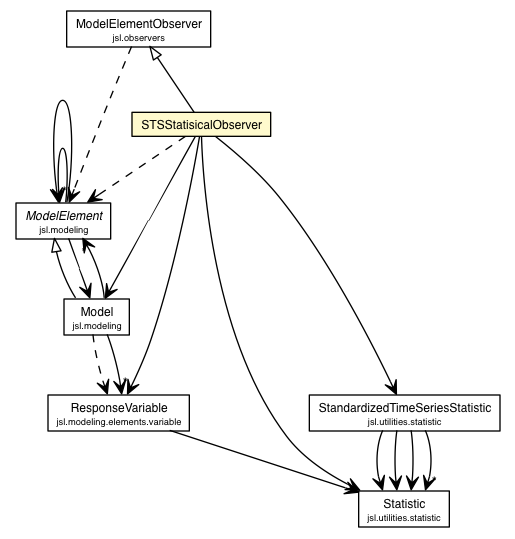

jsl.observers.variable
Class STSStatisicalObserver

java.lang.Object
 jsl.observers.ModelElementObserver
jsl.observers.variable.STSStatisicalObserver
jsl.observers.ModelElementObserver
jsl.observers.variable.STSStatisicalObserver
- All Implemented Interfaces:
- ObserverIfc, IdentityIfc
public class STSStatisicalObserver
- extends ModelElementObserver
myStatistic
protected StandardizedTimeSeriesStatistic myStatistic
myAcrossRepStat
protected Statistic myAcrossRepStat
myResponseVariable
protected ResponseVariable myResponseVariable
myModel
protected Model myModel
STSStatisicalObserver
public STSStatisicalObserver()
STSStatisicalObserver
public STSStatisicalObserver(String name)
- Parameters:
name -
STSStatisicalObserver
public STSStatisicalObserver(int batchSize,
String name)
- Parameters:
name -
resetStatistics
public void resetStatistics()
toString
public String toString()
- Overrides:
toString in class ModelElementObserver
beforeExperiment
protected void beforeExperiment(ModelElement m,
Object arg)
- Overrides:
beforeExperiment in class ModelElementObserver
beforeReplication
protected void beforeReplication(ModelElement m,
Object arg)
- Overrides:
beforeReplication in class ModelElementObserver
initialize
protected void initialize(ModelElement m,
Object arg)
- Overrides:
initialize in class ModelElementObserver
warmUp
protected void warmUp(ModelElement m,
Object arg)
- Overrides:
warmUp in class ModelElementObserver
update
protected void update(ModelElement m,
Object arg)
- Overrides:
update in class ModelElementObserver
afterReplication
protected void afterReplication(ModelElement m,
Object arg)
- Overrides:
afterReplication in class ModelElementObserver
afterExperiment
protected void afterExperiment(ModelElement m,
Object arg)
- Overrides:
afterExperiment in class ModelElementObserver
removedFromModel
protected void removedFromModel(ModelElement m,
Object arg)
- Overrides:
removedFromModel in class ModelElementObserver
Copyright © 2012 Manuel D. Rossetti. All Rights Reserved.